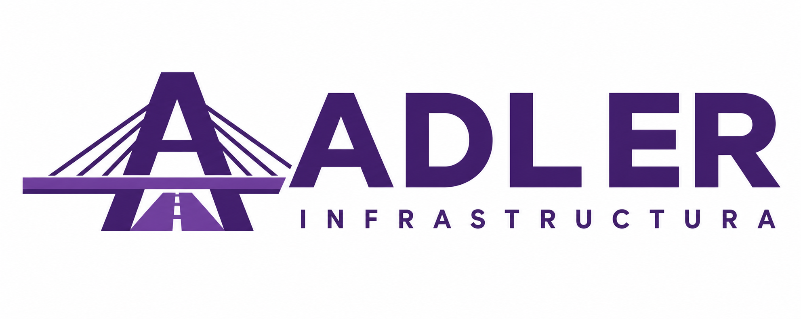

RECURSOS / DOCUMENTO DE TRABAJOFormatos de trabajo
Modelos para completar y adaptar al seguimiento de un proyecto.
Complete estos formatos con los documentos y criterios del proyecto. Las firmas o revisiones deben reflejar la participación real de cada persona.
1. Registro de visita
| Proyecto / ubicación | |
|---|---|
| Fecha / actividad | |
| Participantes y función | |
| Documentos de referencia | |
| Observaciones y evidencias | |
| Acciones y responsables |
2. Relación de cantidades para revisión
Proyecto: ____________________ Periodo: ____________________
| Partida / ubicación | Unidad | Cantidad | Soporte / observación |
|---|---|---|---|
Elaborado por: ____________________ Revisado por: ____________________
3. Seguimiento de cambios
| Referencia / fecha | |
|---|---|
| Descripción y motivo | |
| Documentos relacionados | |
| Efectos por evaluar: alcance, plazo y coste | |
| Responsable / estado de revisión | |
| Decisión y documento de respaldo |
4. Registro de entrega y pendientes
Proyecto: ____________________ Fecha: ____________________
| Entregable / versión | Fecha | Observaciones / pendientes |
|---|---|---|
Entregado por: ____________________ Recibido por: ____________________
Próxima acción y responsable: ________________________________________